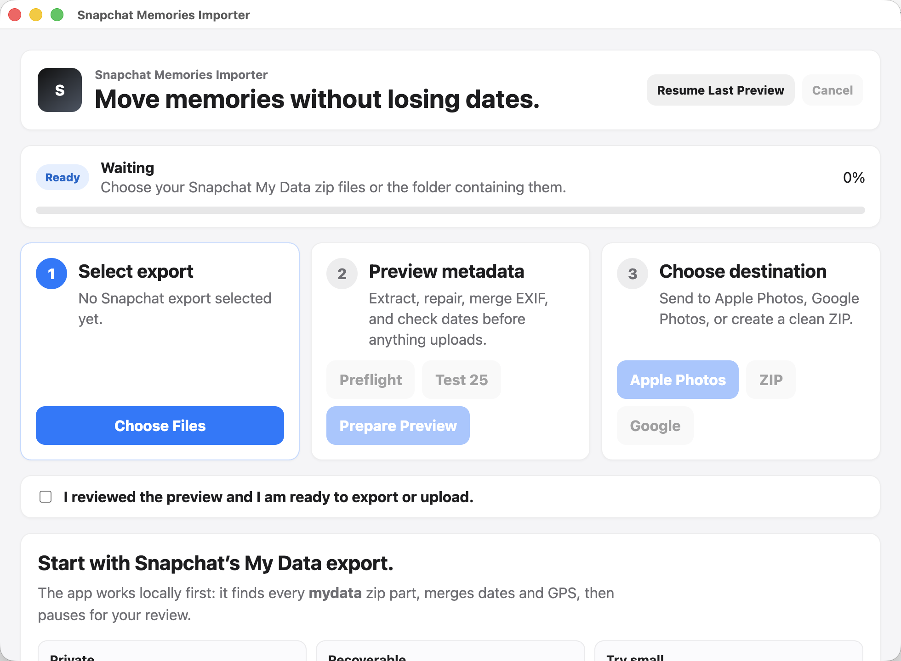

macOS
Universal DMG for Apple Silicon and Intel Macs. Requires macOS 12 Monterey or newer.
Download DMG Mac install guideSHA-256 e3c1e6e055209e8dcb058168e13ca027089dafdeb6e83444e3e13f5cfc021e82
Free GitHub beta
Merge Snapchat export metadata into your photos and videos, preview everything first, then export to Apple Photos, Google Photos, or a clean EXIF ZIP.
Latest release: v0.1.0. Mac and Windows builds are free beta downloads from GitHub Releases.

Downloads
Universal DMG for Apple Silicon and Intel Macs. Requires macOS 12 Monterey or newer.
Download DMG Mac install guideSHA-256 e3c1e6e055209e8dcb058168e13ca027089dafdeb6e83444e3e13f5cfc021e82
Installer for Windows 10 and Windows 11. SmartScreen may warn because this is an unsigned free beta.
Download EXE Windows install guideSHA-256 b5bfe7f81c8cde628c5df1c5347ded2bfe302322b7c285da1005109afbe0a342
After downloading, compare the printed SHA-256 with the checksum above.
shasum -a 256 ~/Downloads/Snapchat-Memories-Importer-0.1.0.dmg
Get-FileHash "$env:USERPROFILE\Downloads\Snapchat-Memories-Importer-Setup-0.1.0.exe" -Algorithm SHA256
Demo
Screenshots
Run a small Test 25 sample or a full preview before anything touches Apple Photos or Google Photos.
Writes available EXIF/XMP dates and GPS data into copied media, with readable chronological filenames.
Create a new merged ZIP if you want to manually upload or archive your cleaned Memories anywhere.
Safety
Extraction, EXIF merge, duplicate detection, reports, and ZIP export happen on your computer before any destination is used.
Google Photos upload starts only after preview approval and browser sign-in. The app requests the append-only Photos scope.
Support bundles include app version, OS, counts, report paths, and failed filenames. They do not include media contents, OAuth tokens, or export zips.
Mac and Windows warnings happen because this free beta is not notarized or trusted-signed yet. The source and release assets are public on GitHub.
Troubleshooting
FAQ
Yes. Select every `mydata` zip part or the folder that contains them, especially when Snapchat split your export into multiple files.
No. Original Snapchat zips are never deleted automatically. Cleanup only targets generated importer output.
No. Exact duplicates are detected for review first. You choose whether to move duplicate candidates to Trash.
Yes. Export the merged EXIF ZIP and upload it wherever you want.
Some Snapchat downloads are incomplete or missing video indexes. The app tries repairs, but unrecoverable files are sent to Needs Review.
The app uses the append-only Google Photos scope so it can add new media. It does not request broad read access.
Version
Includes Test 25 preview, EXIF/XMP merge, duplicate review, Apple Photos import, Google Photos upload when OAuth is configured, Support Bundle, and merged ZIP export.
Install help
If macOS says Apple cannot verify the app, right-click the app in Applications, choose Open, then confirm. If needed, use System Settings > Privacy & Security > Open Anyway.
If Windows says it protected your PC, click More info, confirm the app name, then click Run anyway.
Direct Google upload needs the app OAuth client bundled into the build. ZIP export and Apple Photos still work without Google login.
Use the GitHub Releases page for new versions until automatic updates are enabled after signing and release discipline are locked.
Known limitations